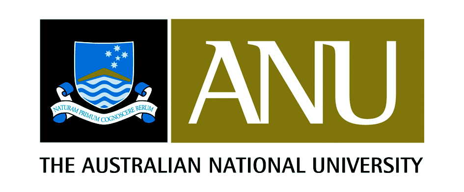
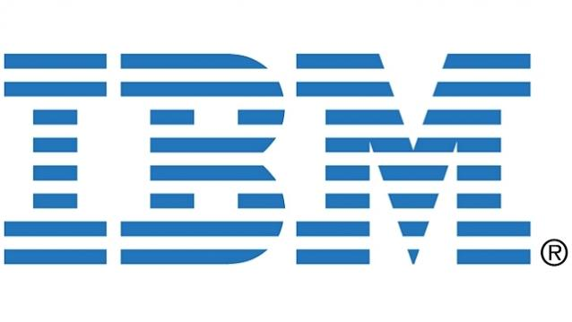
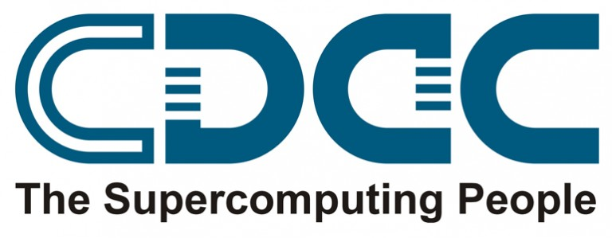

Vivek Kumar is an Assistant Professor at Indraprastha Institute of Information Technology, Delhi (IIITD). He earned his Ph.D. in Computer Science from Australian National University in January 2014 under the supervision of Prof. Steve Blackburn. His Ph.D. research focused on using managed runtime techniques for improving the performance and productivity of parallel programming on multicore architectures. He has a Bachelor degree in Mechanical Engineering from VTU, India.
Prior to joining Ph.D. program in March 2010, he worked for nearly 6 years in research and development positions in High Performance Computing area at technology firms based in Bangalore such as IBM Systems and Technology Labs and C-DAC. After Ph.D., he worked for nearly 3 years as a Research Scientist at Rice University in Prof. Vivek Sarkar's Habanero Extreme Scale Software Research Group.
Research Interests: Parallel programming models and Runtime systems. I am leading HiPeC Lab at IIITD.
[HiPC 2020]: V. Kumar, "PufferFish: NUMA-Aware Work-stealing Library using Elastic Tasks", in 27th IEEE International Conference on High Performance Computing, Data, and Analytics, Pune, India, December 2020 (to appear). [abstract]
Due to the challenges in providing adequate memory access to many cores on a single processor, Multi-Die and Multi-Socket based multicore systems are becoming mainstream. These systems offer cache-coherent Non-Uniform Memory Access (NUMA) across several memory banks and cache hierarchy to increase memory capacity and bandwidth. Random work-stealing is a widely used technique for dynamic load balancing of tasks on multicore processors. However, it scales poorly on such NUMA systems for memory-bound applications due to cache misses and remote memory access latency. Hierarchical Place Tree (HPT) is a popular approach for improving the locality of a task-based parallel programming model, albeit it requires the programmer to map the dynamically unfolding tasks over a NUMA system evenly. Specifying data-affinity hints provides a more natural way to map the tasks than HPT. Still, a scalable work-stealing implementation for the same is mostly unexplored for modern NUMA systems.
This paper presents PufferFish, a new async–finish parallel programming model and work-stealing runtime for NUMA systems that provide a close coupling of the data- affinity hints provided for an asynchronous task with the HPTs in Habanero C/C++ library (HClib). PufferFish introduces Hierarchical Elastic Tasks (HET) that improves the locality by shrinking itself to run on a single worker inside a place or puffing up across multiple workers depending on the work imbalance at a particular place in an HPT. We use a set of widely used memory-bound benchmarks exhibiting regular and irregular execution graphs for evaluating PufferFish. On these benchmarks, we show that PufferFish achieves a geometric mean speedup of 1.5× and 1.9× over HPT implementation in HClib and random work-stealing in CilkPlus, respectively, on a 32-core NUMA AMD EPYC processor.
[IWOMP 2019]: V. Kumar, A. Tiwari, and G. Mitra, "HetroOMP: OpenMP for Hybrid Load Balancing Across Heterogeneous Processors", in 15th International Workshop on OpenMP, Lecture Notes in Computer Science (LNCS), Springer, Auckland, New Zealand, September 2019. [abstract, paper, slides]
The OpenMP accelerator model enables an efficient method of offloading computation from host CPU cores to accelerator devices. However, it leaves it up to the programmer to try and utilize CPU cores while offloading computation to an accelerator. In this paper, we propose HetroOMP, an extension of the OpenMP accelerator model that supports a new clause hetro which enables computation to execute simultaneously across both host and accelerator devices using standard tasking and work-sharing pragmas.
To illustrate our proposal for a hybrid execution model, we implemented a proof-of-concept work-stealing HetroOMP runtime for the heterogeneous TI Keystone-II MPSoC. This MPSoC has host ARM CPU cores alongside accelerator digital signal processor (DSP) cores. We present the design and implementation of the HetroOMP runtime and use several well-known benchmarks to demonstrate that HetroOMP achieves a geometric mean speedup of 3.6× compared to merely using the OpenMP accelerator model.
[EuroPar 2019]: V. Kumar, "Featherlight Speculative Task Parallelism", in 25th International European Conference on Parallel and Distributed Computing, Lecture Notes in Computer Science (LNCS), Springer, Göttingen, Germany, August 2019. [abstract, paper, slides,  ]
]
Speculative task parallelism is a widely used technique for solving search based irregular computations such as graph algorithms. Here, tasks are created speculatively to traverse different search spaces in parallel. Only a few of these tasks succeed in finding the solution, after which the remaining tasks are canceled. To ensure timely cancellation of tasks, existing frameworks either require programmer introduced cancellation checks inside every method in the call chain, thereby hurting the productivity, or provide limited parallel performance.
In this paper we propose Featherlight, a new programming model for speculative task parallelism that satisfies the serial elision property and doesn't require any task cancellation checks. We show that \mysys improves the productivity through a classroom based study. Further, to support Featherlight we present the design and implementation of a task cancellation technique that exploits runtime mechanisms already available within managed runtimes and achieves a geometric mean speedup of 1.6x over the popular Java Fork/Join framework on a 20 core machine.
[IPDPSW 2017]: M. Grossman, V. Kumar, N. Vrvilo, Z. Budimlic, and V. Sarkar, "A Pluggable Framework for Composable HPC Scheduling Libraries", in Proceedings of IEEE International Parallel and Distributed Processing Symposium Workshops, ACM, Orlando, Florida, USA, May 2017. [abstract, paper, slides]
Driven by the increasing diversity of current and future HPC hardware and software platforms, the HPC community has seen a dramatic increase in research and development efforts into the composability of discrete software systems. While modularity is often desirable from a software engineering, quality assurance, and maintainability perspective, the barriers between software components often hide optimization opportunities. Recent examples of work in composable HPC software include GPU-Aware MPI, OpenMP’s target directive, Lithe, HCMPI, and MVAPICH’s unified communication runtime. These projects all deal with breaking down the walls between software or hardware components in order to achieve performance, programmability, and/or portability gains. However, they also generally focus on composing only specific types of HPC software and have limited extensability.
In this paper, we present work on using a pluggable API framework on top of a "generalized work-stealing" runtime to achieve composability of communication, accelerator, and other HPC libraries. We motivate this work by the increasing heterogeneity of HPC hardware, software, and applications, and note that as heterogeneity increases many discrete software frameworks will need to cooperate within a single process. Our framework, called HiPER (a Highly Pluggable, Extensible, and Re-configurable scheduling framework for HPC) enables exactly this cooperation.
We demonstrate the programmability improvements enabled by the HiPER framework through the use of novel APIs which reduce programmer burden. We also present performance studies that demonstrate that through unified and asynchronous scheduling of composed software systems we can achieve performance improvements over hand-optimized benchmark.
[IA3 2016]: V. Kumar, K. Murthy, V. Sarkar, and Y. Zheng, "Optimized Distributed Work-Stealing", in Proceedings of the 6th International Workshop on Irregular Applications: Architectures and Algorithms, IA3, ACM, Salt Lake City, Utah, USA, November 2016 (co-located with SC16). [abstract, paper, slides,  ]
]
Work-stealing is a popular approach for dynamic load balancing of task-parallel programs. However, as has been widely studied, the use of classical work-stealing algorithms on massively parallel and distributed supercomputers introduces several performance issues. One such issue is the overhead of failed steals (communicating with a victim that has no work), which is far more severe in the distributed context than within a single SMP node. Due to the cost of inter node communication, it is critical to reduce the number of failed steals in a distributed context. Prior work has demonstrated that load-aware victim processor selection can reduce the number of failed steals, but not eliminate the failed steals completely.
In this paper, we present two different load-aware implementations of distributed work-stealing algorithm in HabaneroUPC++ PGAS library - BaselineWS and SuccessOnlyWS. BaselineWS follows prior work in implementing a load-aware distributed work-stealing strategy. SuccessOnlyWS implements a novel load- aware distributed work-stealing strategy that overcomes failed attempts by introducing a new policy for moving work from busy to idle processors. In contrast to BaselineWS, SuccessOnlyWS also avoids querying the same processor multiple times with failed steals.We evaluate both BaselineWS and SuccessOnlyWS by using up to 12288 cores of Edison, a CRAY-XC30 supercomputer and by using dynamic irregular applications, as exemplified by the UTS and NQueens benchmarks. We demonstrate that SuccessOnlyWS provides performance improvements up to 7% over BaselineWS.
[PPPJ 2016]: V. Kumar, J. Dolby, and S. M. Blackburn, "Integrating Asynchronous Task Parallelism and Data-centric Atomicity", at The 13th International Conference on Principles and Practices of Programming on the Java Platform: Virtual Machines, Languages, and Tools, PPPJ'16, Lugano, Switzerland, August 2016. [abstract, paper, slides,  ]
]
Processor design has turned toward parallelism and heterogeneous cores to achieve performance and energy efficiency. Developers find high-level languages attractive as they use abstraction to offer productivity and portability over these hardware complexities. Over the past few decades, researchers have developed increasingly advanced mechanisms to deliver performance despite the overheads naturally imposed by this abstraction. Recent work has demonstrated that such mechanisms can be exploited to attack overheads that arise in emerging high-level languages, which provide strong abstractions over parallelism. However, current implementation of existing popular high-level languages, such as Java, offer little by way of abstractions that allow the developer to achieve performance in the face of extensive hardware parallelism.
In this paper, we present a small set of extensions to the Java programming language that aims to achieve both high performance and high productivity with minimal programmer effort. We incorporate ideas from languages like X10 and AJ to develop five annotations in Java for achieving asynchronous task parallelism and data-centric concurrency control. These annotations allow the use of a highly efficient implementation of a work-stealing scheduler for task parallelism. We evaluate our proposal by refactoring classes from a number of existing multithreaded open source projects to use our new annotations. Our results suggest that these annotations significantly reduce the programming effort while achieving performance improvements up to 30% compared to conventional approaches.
[OpenSHMEM 2016]: M. Grossman, V. Kumar, Z. Budimlic, and V. Sarkar, "Integrating Asynchronous Task Parallelism with OpenSHMEM", at The 3rd workshop on OpenSHMEM and Related Technologies, OpenSHMEM 2016, Baltimore, Maryland, USA, August 2016. [abstract, paper, slides]
The Partitioned Global Address Space (PGAS) programming models combine shared and distributed memory features, providing the basis for high-performance and high-productivity parallel programming environments. Most current PGAS approaches use complex compiler transformations to translate the user code to native code. OpenSHMEM is a very widely used PGAS programming model that offers a library based approach. Currently, OpenSHMEM relies on other libraries (e.g., OpenMP) for harnessing node-level parallelism. This OpenSHMEM+X approach requires the expertise of a hero-level programmer and typically encounters bottlenecks on shared resources, long wait times due to load imbalances, as well as data locality problems.
In this paper, we introduce an AsyncSHMEM PGAS library that supports a tighter integration of shared and distributed memory parallelism than approaches based on OpenSHMEM+X. AsyncSHMEM integrates the OpenSHMEM library with a thread-pool-based work-stealing runtime. AsyncSHMEM aims to prepare OpenSHMEM for the next generation of HPC systems by making it more adaptive and taking advantage of asynchronous computation to hide data transfer latencies, interoperate with tasks, improve load balancing (both of communication and computation), and improve locality. In this paper we present the design and implementation of AsyncSHMEM, and demonstrate the performance of AsyncSHMEM by performing a scalability analysis of two benchmarks on the Titan supercomputer. Our experiments show that AsyncSHMEM is competitive with OpenSHMEM+OpenMP model when executing highly regular workloads, while it significantly outperforms it on highly event-driven applications.
[HPEC 2015]: V. Kumar, A. Sbirlea, Z. Budimlic, D. Majeti and V. Sarkar, "Heterogeneous Work-stealing across CPU and DSP cores", at The 19th International Conference on High Performance Extreme Computing Conference, HPEC 2015, Waltham, MA, USA, September 2015. [abstract, paper, slides,  ]
]
Due to the increasing power constraints and higher and higher performance demands, many vendors have shifted their focus from designing high-performance computer nodes using powerful multicore general-purpose CPUs, to nodes containing a smaller number of general-purpose CPUs aided by a larger number of more power-efficient special purpose processing units, such as GPUs, FPGAs or DSPs. While offering a lower power-to-performance ratio, unfortunately, such heterogeneous systems are notoriously hard to program, forcing the users to resort to lower-level direct programming of the special purpose processors and manually managing data transfer and synchronization between the parts of the program running on general-purpose CPUs and on special-purpose processors.
In this paper, we present HC-K2H, a programming model and runtime system for the Texas Instruments Keystone II Hawking platform, consisting of 4 ARM CPUs and 8 TI DSP processors. This System-on-a-Chip (SoC) offers high floating-point performance with lower power requirements than other processors with comparable performance. We present the design and implementation of a hybrid programming model and work-stealing runtime that allows tasks to be created and executed on both the ARM and DSP, and enables the seamless execution and synchronization of tasks regardless of whether they are running on the ARM or DSP. The design of our programming model and runtime is based on an extension of the Habanero C programming system. We evaluate our implementation using task-parallel benchmarks on a Hawking board, and demonstrate excellent scaling compared to sequential implementations on a single ARM processor.
[PGAS 2014]: V. Kumar, Y. Zheng, V. Cave, Z. Budimlic and V. Sarkar, "HabaneroUPC++: a Compiler-free PGAS Library", at The 8th International Conference on Partitioned Global Address Space Programming Models, PGAS 2014, Eugene, Oregon, October 2014. [abstract, paper, slides,  ]
]
The Partitioned Global Address Space (PGAS) programming models combine shared and distributed memory features, providing the basis for high performance and high productivity parallel programming environments. UPC++ is a very recent PGAS implementation that takes a library-based approach and avoids the complexities associated with compiler transformations. However, this implementation does not support dynamic task parallelism and only relies on other threading models (e.g., OpenMP or pthreads) for exploiting parallelism within a PGAS place.
In this paper, we introduce a compiler-free PGAS library called Habanero-UPC++, which supports a tighter integration of intra-place and inter-place parallelism than standard hybrid programming approaches. The library makes heavy use of C++11 lambda functions in its APIs. C++11 lambdas avoid the need for compiler support while still retaining the syntactic convenience of language-based approaches. The Habanero-UPC+ library implementation is based on a tight integration of the UPC++ library and the Habanero-C++ library, with new extensions to support the integration. The UPC++ library is used to provide PGAS communication and function shipping support using GASNet, and the Habanero-C++ library is used to provide support for intra-place work-stealing integrated with function shipping. We demonstrate the programmability and performance of our implementation using two benchmarks, scaled up to 6000 cores. The insights developed in this paper promise to further enhance the usability and popularity of PGAS programming models.
[VEE 2014]: V. Kumar, S. M. Blackburn and D. Grove, "Friendly Barriers: Efficient Work-Stealing With Return Barriers", at The 10th ACM SIGPLAN/SIGOPS International Conference on Virtual Execution Environments, VEE 2014, Salt Lake City, Utah, March 2014. [abstract, paper, slides]
This paper addresses the problem of efficiently supporting parallelism within a managed runtime. A popular approach for exploiting software parallelism on parallel hardware is task parallelism, where the programmer explicitly identifies potential parallelism and the runtime then schedules the work. Work-stealing is a promising scheduling strategy that a runtime may use to keep otherwise idle hardware busy while relieving overloaded hardware of its burden. However, work stealing comes with substantial overheads. Recent work identified sequential overheads of work-stealing, those that occur even when no stealing takes place, as a significant source of overhead. That work was able to reduce sequential overheads to just 15%.
In this work, we turn to dynamic overheads, those that occur each time a steal takes place. We show that the dynamic overhead is dominated by introspection of the victim’s stack when a steal takes place. We exploit the idea of a low overhead return barrier to reduce the dynamic overhead by approximately half, resulting in total performance improvements of as much as 20%. Because, unlike prior work, we attack the overheads directly due to stealing and therefore attack the overheads that grow as parallelism grows, we improve the scalability of work-stealing applications. This result is complementary to recent work addressing the sequential overheads of work-stealing. This work therefore substantially relieves work-stealing of the increasing pressure due to increasing intranode hardware parallelism.
[OOPSLA 2012]: V. Kumar, D. Frampton, S. M. Blackburn, D. Grove, and O. Tardieu, "Work-Stealing Without The Baggage," in Proceedings of the 2012 ACM SIGPLAN Conference on Object-Oriented Programming Systems, Languages & Applications (OOPSLA 2012), Tucson, AZ, October 19-26, 2012, 2012. ( selected for SIGPLAN Communications of ACM Research Highlights, 2013) [abstract, paper, slides,  , benchmarks ]
, benchmarks ]
Work-stealing is a promising approach for effectively exploiting software parallelism on parallel hardware. A programmer who uses work-stealing explicitly identifies potential parallelism and the runtime then schedules work, keep- ing otherwise idle hardware busy while relieving overloaded hardware of its burden. Prior work has demonstrated that work-stealing is very effective in practice. However, work- stealing comes with a substantial overhead: as much as 2× to 12× slowdown over orthodox sequential code.
In this paper we identify the key sources of overhead in work-stealing schedulers and present two significant refinements to their implementation. We evaluate our work- stealing designs using a range of benchmarks, four different work-stealing implementations, including the popular fork-join framework, and a range of architectures. On these benchmarks, compared to orthodox sequential Java, our fastest design has an overhead of just 15%. By contrast, fork-join has a 2.3× overhead and the previous implementation of the system we use has an overhead of 4.1×. These results and our insight into the sources of overhead for work- stealing implementations give further hope to an already promising technique for exploiting increasingly available hardware parallelism.
[VMIL 2012]: V. Kumar and S. M. Blackburn, "Faster Work-Stealing With Return Barriers", at The 6th workshop on Virtual Machines and Intermediate Languages, VMIL 2012, Tucson, AZ, October 2012. [abstract, paper, slides]
Work-stealing is a promising approach for effectively exploiting software parallelism on parallel hardware. A programmer who uses work-stealing explicitly identifies potential parallelism and the runtime then schedules work, keep- ing otherwise idle hardware busy while relieving overloaded hardware of its burden. However, work-stealing comes with substantial overheads. Our prior work has demonstrated that using the exception handling mechanism of modern VMs and gathering the runtime information directly from the victims execution stack can significantly reduce these overheads. A return barrier is a mechanism for intercepting the popping of a stack frame, and thus is a powerful tool for optimizing mechanisms that involve scanning of stack state.
In this paper we identify the overhead associated with managing the work-stealing related information on a victim’s execution stack. We present the design and preliminary findings of using return barriers on a victim’s execution stack to reduce these overheads. We evaluate our design using classical work-stealing benchmarks. On these bench- marks, compared to our prior design, we are able to reduce the overheads by as much as 58%. These preliminary findings give further hope to an already promising technique of harnessing rich features of a modern VM inside a work-stealing scheduler.
[X10 2011]: V. Kumar, D. Frampton, D. Grove, O. Tardieu, and S. M. Blackburn, "Work-Stealing by Stealing States from Live Stack Frames of a Running Application," at X10' 11 Workshop collocated with PLDI 2011, San Jose, CA, June 2011. [abstract, paper, slides]
The use of a work stealing scheduler has become a popular approach for providing task parallelism. It is used in many modern parallel programming languages, such as Cilk and X10, which have emerged to address the concerns of parallel programming complexity on modern multicore architectures.
There are various challenges in providing an efficient implementation of work-stealing, but in any implementation it must be possible for the thief to access the execution state required to per- form the stolen task. The natural way to achieve this is to save the necessary state whenever a producer creates stealable work. While the ability to provide some degree of parallelism may dominate performance at scale, it is common for the vast majority of potentially stealable work to never actually be stolen, but instead processed by the producer itself. This indicates that to further improve performance we should minimize the overheads incurred in making work available for stealing.
We are not the only ones to make this observation, for example X10's current C++ work-stealing implementation stack-allocates state objects and lazily copies them to the heap to avoid unnecessary heap allocation during normal execution. In our context of a Java virtual machine, it is possible to extend this idea further and avoid stack allocating state objects, but instead allow thieves to ex- tract state directly from within stack frames of the producer. This is achieved by using state-map information provided by a cooperative runtime compiler, allowing us to drive down the cost of making state available for stealable work items. We discuss our design and preliminary findings for the implementation of our framework in- side X10 work-stealing runtime and the baseline compiler of Jikes RVM, a high-performance Java research virtual machine.
V. Kumar, M. Grossman, H. Shan and V. Sarkar, "Scaling HabaneroUPC++ on Heterogeneous Supercomputers", at The 9th International Conference on Partitioned Global Address Space Programming Models, PGAS 2015, (poster accepted with extended abstract), Washington, D.C., September 2015. [abstract, paper, poster]
Accelerators/co-processors have made their way into supercomputing systems. These modern heterogeneous systems features multiple layers of memory hierarchies, and produce a high degree of thread-level parallelism. To ensure that current and future applications perform well on these systems, it is important that users be able to cleanly express the various types of parallelism found in their applications while trusting that expertly-implemented runtime libraries will schedule this parallelism in a way that efficiently utilizes the memory hierarchies and computational resources of their system.
In this poster we present our work-in-progress, a distributed, heterogeneous programming model in HabaneroUPC++, which aims to target distributed, heterogeneous systems with multi-layered memory hierarchies through a distributed data-driven programming model that integrates all memory layers together through data-flow programming.
V. Kumar, " Rule The Next Generation Supercomputers With X10", at ANU CECS HDR poster presentation ( first prize recipient), 2010. [poster]
Achieving High Performance and High Productivity in Next Generation Parallel Programming Languages, Ph.D. thesis, The Australian National University, Canberra, Australia, degree awarded in May 2015. [link]
Featherlight Speculative Task Parallelism EuroPar, Gottingen, Germany, 2019. [slides,  ]
]
Structured Parallelism for High Productivity and High Performance IndoSys, IISc, Bangalore, 2019. [slides]
Integrating Asynchronous Task Parallelism and Data-centric Atomicity PPPJ, Lugano, Switzerland, 2016. [slides,  ]
]
Heterogeneous Work-stealing across CPU and DSP cores, HPEC, Waltham, MA, USA, 2015. [slides,  ]
]
HabaneroUPC++: a Compiler-free PGAS Library, PGAS, Eugene, Oregon, USA, 2014. [slides,  ]
]
High Performance Runtime for Next Generation Parallel Programming Languages", Doctoral Showcase - Dissertation Research Showcase, SC, Denver, Colorado, USA, 2013. [slides,  ]
]
Work-Stealing Without The Baggage, OOPSLA, Tucson, AZ, USA, 2012. [slides,  ]
]
Faster Work-Stealing With Return Barriers, VMIL, Tucson, AZ, USA, 2012. [slides]
Work-Stealing by Stealing States from Live Stack Frames of a Running Application, X10'11, San Jose, CA, USA, 2011. [slides]
Introduction to High Performance Computing and Message Passing Interface (MPI)
IIITD
Current Students (IIITD)
Past Students (IIITD)
Prospective Students: I am looking for highly motivated B.Tech, M.Tech, and Ph.D. students to work in the following areas of parallel programming models and runtime systems: a) heterogeneous processors and accelerators (SoCs, FPGAs, etc.), and b) managed language runtimes such as JVM and JavaScript engine. If you are very good in programming (C, C++, Java) and also like hacking big software systems then please email me your resume.
HClib: This is a compiler-free work-stealing library, which supports Habanero-C work-stealing constructs.
Habanero-UPC++: Its a compiler-free PGAS library, which supports a tighter integration of intra-place and inter-place parallelism than standard hybrid programming approaches.
AJWS: Atomic Java with work-stealing. It draws together the benefits of work-stealing and data-centric atomicity, allowing the application programmer to conveniently and succinctly expose the parallelism inherent in their Java program.
Java TryCatchWS: The Java try-catch work-stealing (TryCatchWS) framework is now available online. This is the software implementation of my Ph.D. research.
Program Committee Member: HiPC 2019, MPLR 2019, RESPA 2015, X10'16, IA^3 2016, IA^3 2017, HiPC SRS 2017-2018
Organizing Committee: RESPA 2015 (publicity chair), PPoPP 2017 (web chair)
Journal Reviewer: TACO, TOPC, TPDS, TOPLAS, JPDC.
My students from the courses that I have taught at IIITD:




Room No. B-506, R&D Block, 5th Floor, IIIT Delhi, Near Okhla Phase 3, New Delhi-110020, India
E-mail: vivekk @ iiitd.ac.in
Site created on: August 2, 2015
Previous site location: http://users.cecs.anu.edu.au/~vivek/ (ANU CECS department).